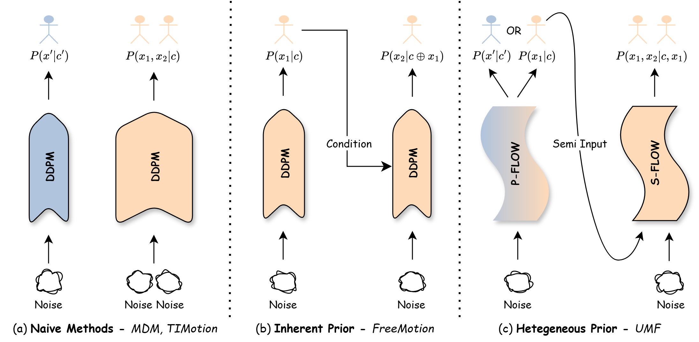
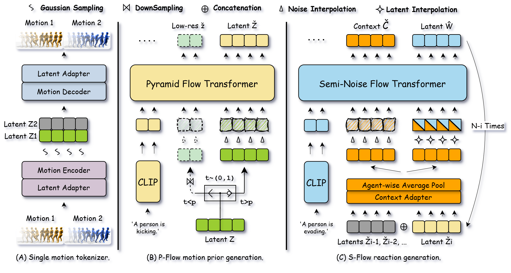

Abstract
Generative models excel at motion synthesis for a fixed number of agents but struggle to generalize with variable agents. Based on limited, domain-specific data, existing methods employ autoregressive models to generate motion recursively, which suffer from inefficiency and error accumulation. We propose Unified Motion Flow (UMF), which consists of Pyramid Motion Flow (P-Flow) and Semi-Noise Motion Flow (S-Flow). UMF decomposes the number-free motion generation into a single-pass motion prior generation stage and multi-pass reaction generation stages. Specifically, UMF utilizes a unified latent space to bridge the distribution gap between heterogeneous motion datasets, enabling effective unified training. For motion prior generation, P-Flow operates on hierarchical resolutions conditioned on different noise levels, thereby mitigating computational overheads. For reaction generation, S-Flow learns a joint probabilistic path that adaptively performs reaction transformation and context reconstruction, alleviating error accumulation. Extensive results and user studies demonstrate UMF's effectiveness as a generalist model for multi-person motion generation from text. We will release the code.
Key Contributions

Figure 1. (a) Standard methods are restricted to a fixed number of agents. (b) Autoregressive methods decouple generation into a motion prior and subsequent reaction guided by a conditioning network. (c) Our UMF leverages a heterogeneous motion prior as the adaptive start point of the reaction flow path, mitigating error accumulation.
🔗 Unified Motion Flow (UMF)
A generalist framework for number-free text-to-motion generation. UMF's core design unifies heterogeneous single-person (HumanML3D) and multi-person (InterHuman) datasets within a multi-token latent space.
🔺 Pyramid Motion Flow (P-Flow)
For efficient individual motion synthesis, P-Flow operates on hierarchical resolutions conditioned on the noise level, alleviating computational overheads of multi-token representations while maintaining high-fidelity generation.
🌊 Semi-Noise Motion Flow (S-Flow)
For reaction and interaction synthesis, S-Flow learns a joint probabilistic path by balancing reaction transformation and context reconstruction, thereby alleviating error accumulation in autoregressive generation.
🏆 State-of-the-Art Results
UMF achieves SOTA performance on multi-person generation benchmarks (FID 4.772 on InterHuman). A user study validates UMF's zero-shot generalization to unseen crowd scenarios (N > 2).
Method Overview

Figure 2. Overview of the UMF architecture. (A) Unified Motion VAE: Encodes heterogeneous motions (HumanML3D, InterHuman) into a regularized multi-token latent space, bridging domain gaps between datasets. (B) P-Flow: Synthesizes the individual motion prior hierarchically — processing low-resolution latents at early timesteps and full-resolution at later timesteps, reducing computation by ≈1/K. (C) S-Flow: Generates reactions by jointly learning context reconstruction and reaction transformation paths, alleviating error accumulation. Applied autoregressively for N > 2 agents.
Quantitative Results
UMF substantially outperforms the generalist baseline FreeMotion, improving Top3 R-Precision by 28% and reducing FID by 29%. Against specialist methods, UMF achieves the best FID score.
| Method | R Top-3 ↑ | FID ↓ | MM Dist ↓ | Diversity → |
|---|---|---|---|---|
| Ground Truth | 0.701 | 0.273 | 3.755 | 7.948 |
| InterGen | 0.624 | 5.918 | 5.108 | 7.387 |
| TIMotion | 0.724 | 5.433 | 3.775 | 8.032 |
| InterMask | 0.683 | 5.154 | 3.790 | 7.944 |
| FreeMotion | 0.544 | 6.740 | 3.848 | 7.828 |
| UMF (Ours) | 0.694 | 4.772 | 3.784 | 8.039 |
Qualitative Results
In-domain Motion Generation
Zero-Shot Multi-Agent Generation
BibTeX
@inproceedings{huang2026umf,
title={Unified Number-Free Text-to-Motion Generation Via Flow Matching},
author={Huang, Guanhe and Celiktutan, Oya},
booktitle={Proceedings of the IEEE/CVF Conference on Computer Vision and Pattern Recognition (CVPR)},
year={2026}
}